Мои родители
Майоров Иван Феоктистович (1919-1998)
К 100-летию со дня рождения.
Предисловие
Мой клип в качестве предисловия
Жизнь родителей прошла в социальных утопиях ХХ века, которые претворяли в жизнь, как хотели, революционеры всех цветов. Более всех перестарались коммунисты и фашисты.
Похоже, ХХ век был пиком проб и ошибок начинающих граждан, коммунистической и социалистической целеустремлённости стран и масс к целям, которые указывали им вожди и государственный аппарат, создаваемый ими под себя.
От всевозможных социальных теорий с суффиксом изм и заблуждений вызванных ими и в России, и в остальных странах мира погибли миллионы человек, у миллиардов было экспроприирована собственность, а остальное население выживало как могло.
Меня, измученного с юности марксизмом-ленинизмом, тошнит от любых теорий с суффиксом изм, где отсутствует возможность элементарного расчёта тех или иных ценностей, декларируемых в них.
Нынешние ошибки молодого гражданского сообщества кроются в его социальной болезни, привитой чрезмерным насилием со стороны правящего режима и его государственного аппарата.
На мой взгляд, европейские страны при помощи рационализма и либерализма, США и развитые страны Азии излечились от века войн и революций, от века социальных проб и ошибок к 70-м годам, а наше население, благодаря победе сталинского режима в войне, и в начале 21 века остаётся травмированным, с искажённым сознанием без традиций самосознания личности.
У людей нет понятий и чувства своего основного свойства - достоинства человека, а потому они безропотно становятся щепками на лесоповале государственного строительства под жёстким руководством правящей партии, подцензурными СМИ и обвинительной системы правосудия. Это историческое наследие нам предстоит понять и преодолеть последствия собственной деятельности население России, которое своими руками под руководством большевиков уничтожило тонкий культурный слой империи. Особенно надо быть осторожным на службе государству: ефрейтор выше рядового и, как правило, начинает служение государству с притеснения ближнего от имени государства. Огромная сила государства против возможностей гражданина и его предприятий не сбалансирована справедливым правосудием.
Нынешняя государственная машина скроена наспех и населению непонятна. В Москве в лето 2019 года участились случаи избиения протестующей молодёжи российской гвардией, а в Армии опять заговорили об издевательствах солдат и офицеров над призывниками. Ценность человека по-прежнему меркнет в тени государственной машины, впрочем как и раньше в тени олимпийских богов, а в последствии и единого Бога и его пророков. И если в древние времена Русь приглашала князей для правления, то сегодня приглашаются люди, преданные вертикали, а на многочисленные рынки великой России обычные смышлёные южные торговцы. Тренд не утешительный.
Надеюсь, что компьютерное поколение преодолеет измы и решит проблемы формирования русской политической нации.
Однако сегодня чиновники, 85% которых борются только за свои мутные доходы, освоили новый вид давления на население - взятки, а некоторые руководители высшую форму - коррупцию или подкуп, провокации и даже убийства. При этом в стране не только отсутствует зрелое гражданское общество, но и по данным Минздрава, несколько миллионов страдают всевозможными расстройствами и слабоумием. Кроме этого у населения выработалась масса вредных привычек : к курению (чтобы подумать), к алкоголю (чтобы расслабиться), к телевизору (чтобы поразмышлять ), усугубляя и без того мало -приспособленное мышление для свободной жизни в современном гражданском обществе. И это в условиях, когда главной ценностью признан человек, а не государственная машина для обслуживания всевозможных нужд населения. Сегодня ведётся борьба за качество жизни, чистый воздух, воду и питание, за экологию и чистые технологии, а распределённое лидерство набирает темп в развитых государствах с 50-х годов ХХ века после принятия ООН в 1948 году Всеобщей декларации прав человека.
Потребность в каком-либо шоу (это рекомендую) берёт своё начало в воспитанном большевиками убеждении советского человека в лучшем завтрашнем дне и будущем. А день грядущий иногда хуже дня текущего. Рекомендую ещё раз посмотреть фильм Если завтра война, там будущее рисовалось большевиками в розовых цветах.
Для понимания сегодняшних тенденций и дня завтрашнего полезно критично смотреть не только старые фильмы, но и прислушиваться к новостям вокруг и за границей.
По моему мнению, после крушения целеустремлённого в коммунизм-социализм СССР, у нас не начался переход на ценностно-ориентированое самосознание и устройство нашего общества в семье цивилизаций ускоренно переходящих к жизни по правам и свободам гражданина и человека. Не изменяются и традиции социального лидерства: массы одинаково приемлют и вождей, и выборных президентов и наёмных менеджеров, что приводит к торможению социального времени. Сегодня идёт обмен нашего общего сырья на заграничные умные машины, технологии, оборудование под руководством и в интересах авторитетных лидеров. Но и этот обмен может закончится на долгие годы. Люди останутся с телевизором и пустым холодильником. Да и состояние населения по данным Росстата на апрель 2019 года не обнадёживает: 20% хотят уехать из страны в развитые страны, 30% не могут позволить себе лишнюю пару обуви, 10% не имеют до сих пор в доме современный туалет, выросла разница в благосостоянии 10% самых богатых и 10% самых бедных граждан, не простая ситуация в семьях. Но самое главное, бывшее советское население (я не говорю о некоторых лицах и социальных группах) в новой России не приобрело отечества, уютной, надёжной и понятной Родины, оно по-прежнему далеко от этих благ, как и многие века до этого, а потому и не растёт естественными темпами. Правители постоянно используют население страны в глобальных или локальных конфликтах по всему миру.
Да и теперь оказалось, что помочь нашему населению некому. Не созрела новая элита после отъезда господ в Париж в 1917-1921 годы. Разве, что бухгалтера, Гайдар с Чубайсом, после краха СССР с упоением говорили про рынок, который должен был научить массы всему, в том числе и родину любить.
Близко наблюдая жизнь москвичей, могу констатировать - повышение в два раза зарплат и пенсий в регионах, например, в моём городе юности Гусь-Хрустальном, приведёт только к тому, что мужики заставят пространства возле пятиэтажек своими машинами, а их дамы с собачками загадят оставшееся пространство. При этом качество жизни мало изменится. По-прежнему останутся переполненными детские дома, а на подъездах многоквартирных домов будут висеть объявления о широком выборе брошенных псов и кошек в приютах для животных. С любовью будут мести и убирать мусор приезжие из Азии, а их дети с прилежанием учиться в русских школах. По-прежнему у магазинах будут толкаться по утрам русские алкоголи обоих полов и различного возраста, а русские девочки в 12 лет будут перекуривать перед началом занятий в школах.
Но и средства на повышение благосостояния в два раза в современной России никто не предлагает! Кроме этого, нельзя ликвидировать исторический провал только денежным содержанием. Хотя на бюрократию деньги есть, но это не решение проблемы.
На мой взгляд, качество населения России и причины постоянных провалов хорошо показаны в удачной экранизации Михаилом Швейцером великого романа Льва Толстого 1899 года Воскресение. Не только мимолётное увлечение молодого князя ломает судьбу подневольной девушки. Её приводят на каторгу и показания совершенно безнравственной мещанки Бочковой, и крестьянина Картинкина, и недобросовестность присяжных заседателей из господ.
К сожалению, я не нашёл даже в этом великом романе Льва Толстого рассуждений о равенстве каждого человека в своём достоинстве. Оно у него разное как у рубля и сторублёвки. Он лишь однажды высказывается непосредственно о человеческом достоинстве, что "люди в этих заведениях подвергались всякого рода ненужным унижениям – цепям, бритым головам, позорной одежде, то есть лишались главного двигателя доброй жизни слабых людей—заботы о мнении людском, стыда, сознания человеческого достоинства".
Рекомендую ещё раз посмотреть этот фильм, сцены суда над Екатериной Масловой и подумать, в каком качестве осталось население России после гибели империи, насильственной коллективизации, экспроприации, индустриализации, обезбоживания, репрессий и "отъезда господ в Париж" в ходе ХХ века.
Упрощенно говоря, потомки Екатерины Масловой, её подельников, охранников и сочувствующих из фильма населяют сегодня то, что осталось от России.
Население обучается, но образовываться не спешит. Бывшие холопы друг другу хамят, в своих управленческих вертикалях кричат, быт не налаживается, все ждут чуда от каждого избранного и назначенного сверху должностного лица. Причина в том, что жизненные силы и закваска для будущего народа была окончательно расплескана и растоптана в ХХ веке. Даже из нищеты нет сил выйти - благосостояние падает пятый год подряд и это для травмированного населения не повод для беспокойства. СМИ как и в советские времена в руках одной партии и мутной вертикали власти, сотрудники которой срослись с авторитетами из делового народа. Возникла копия поздней КПСС.
Весьма вероятно, скоро опять войдёт в моду КВН и люди начнут хохотать от нового Райкина или Галкина. Но из этого, я полагаю, ничего хорошего не выйдет. Новый застой для России может обернуться её дальнейшим распадом и частичным захватом с последующим восстановлением (например, вежливыми китайцами Дальнего Востока и трудолюбивыми, непьющими и не курящими выходцами из азиатских республик бывшего СССР). Но это будет другая страна или страны. И это окажется естественным после и в ходе текущих событий, вне русла и сути времени. Оценивать ситуацию в стране эмоциональными терминами хорошо или плохо недостаточно. Нужна развитая социологическая служба.
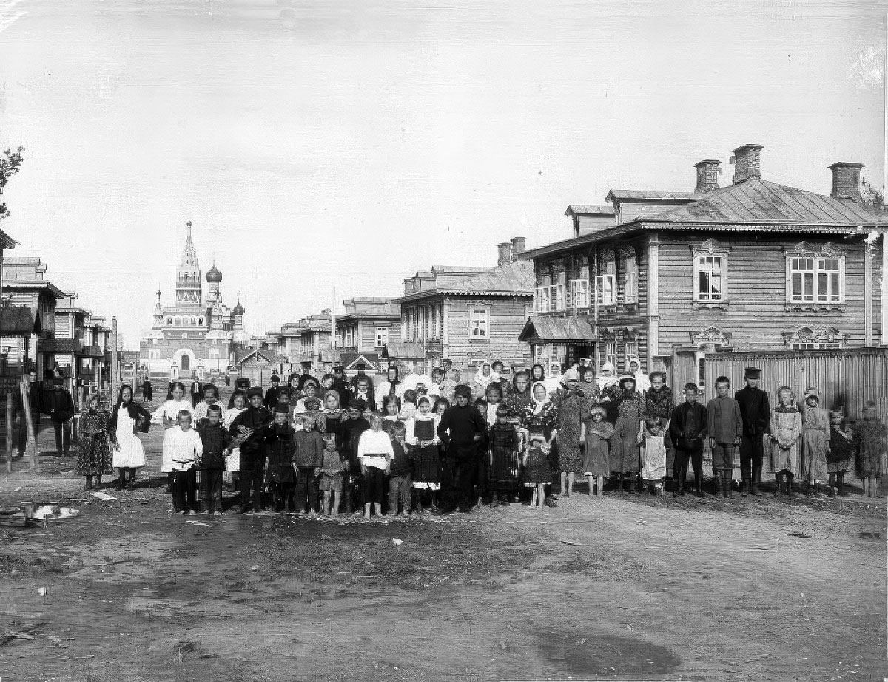
Фото привокзальной улицы Гусь-Хрустального 1913 года. Купола Георгиевского собора ещё не снесены, новые дома, дети и чистый воздух наступающего лета радуют глаз.
Промышленники, предприниматели и князья Мальцовы строили успешный город на века, но их ценности были разорены, а их завод хрусталя ныне в руинах.
Отец родился в деревене Уляхино в семье лесника Феоктиста Русакова (1880-1918) и Натальи Илларионовны Майоровой (1886-1970). Иван был четвертым ребенком в семье, у него были старший брат Пётр и две сестры – Марья и Евдокия.
Мой дед вернулся с Первой мировой войны и умер от тифа на призывном пункте Красной Армии в городе Владимире ещё до рождения моего отца. Ужас мировой и гражданских войн унёс из жизни огромный потенциал нашей семьи и нашего народа. Полагаю, что для спасения затеи с революцией Троцкий поставил под ружьё всё мужское население Владимирской области.
Деревню Уляхино образовал в конце 1850-х годов из своих холопов владелец стекольных заводов Мальцов. Часть крестьян были местными, а часть завезли из других поместий основанных ещё майором Мальцовым. Жители должны были рубить для заводов лес на дрова. Продавали дрова и возили их в Москву. Так что должность лесника была для деревни на уровне колхозного агронома.
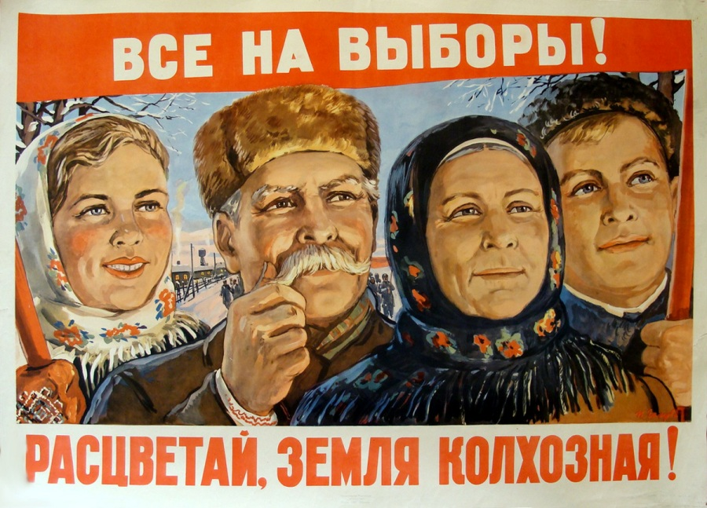
После жутких репрессий и высылки 3 тысяч кулаков по Владимирской области жизнь колхозная не заладилась.
https://bessmertnybarak.ru/article/istoriya_repressiy_vo_vladimirskoy_oblasti/
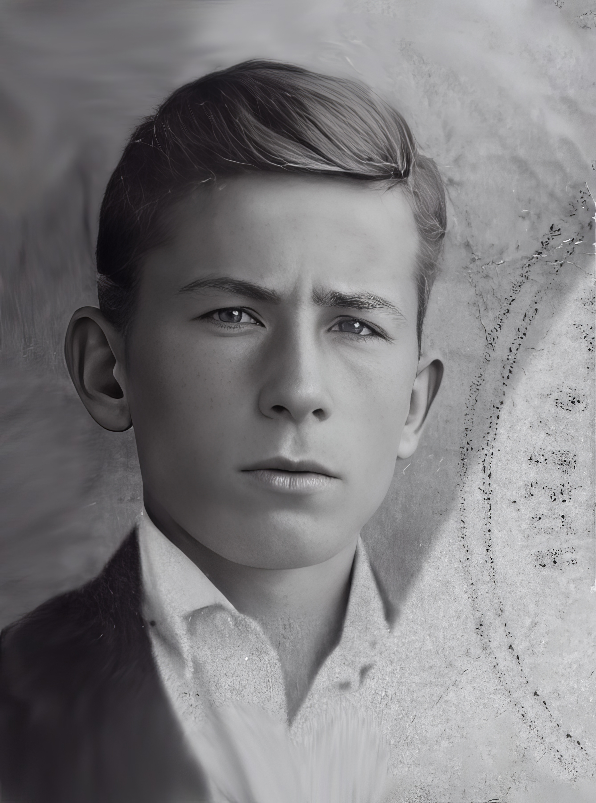
В 1935 году в 16 лет отец поступил учиться в фабрично-заводское училище в Гусь-Хрустальном. Жил в общежитии и работал на стекольных заводах города.
Как жила в те годы моя бабушка (вдова с четырьмя детьми) мне неизвестно. Запомнился только эпизод из рассказов отца, что в 1930 году их с братом чуть было не ограбили в пути из деревни в Гусь-Хрустальный. Он с 10 лет со старшим братом возил на рынок зерно и другие продукты, пока у них не изъяли для колхоза лошадь.
2 апреля 2008 г. Государственная Дума РФ приняла специальное Заявление, в котором дословно сказано: "В результате голода, вызванного насильственной коллективизацией, пострадали многие регионы РСФСР, Казахстана, Украины, Белоруссии. От голода и болезней, связанных с недоеданием, в 1932-1933 годах там погибло около 7 млн. человек".
После колхозных реформ в деревне часть семьи отца (мать Наталья и женатый старший брат Пётр) в 1938 году переехали в посёлок Курлово, а в 1939 году отца, вероятно, из Гуся призвали в Рабоче-крестьянский красный флот.
Моя бабушка Наталья после смерти мужа в период выдачи паспортов в деревне взяла свою девичью фамилию Майорова и записала всех детей на неё. Информации о родственниках мужа - Русаковых в семье сохранилось мало. Часть из них жили в деревне Уляхно, а двоюродный брат деда в посёлке Курлово, где занимался изготовлением дранки - кровельного материала.
Войну режимов двух ефрейторов в эпоху великих открытий современности отец встретил на флоте уже подготовленным матросом. Население в военной форме не хотело воевать за колхозы и в начале войны, внезапность которой можно объяснить только необразованным массам, покидало свои позиции. Миллионы сдались в плен и не малое количество пошли служить Гитлеру.
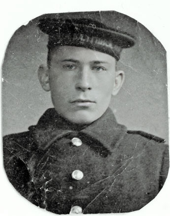
Встаёт проблема предательства. Кто кого и по каким признакам предавал в ХХ веке?. Большевики изначально совратили и предали рабочих и крестьян и ничего им не дали после победоносной гражданской войны под их знамёнами. Крестьяне предали Главного Иуду - Сталина в начале войны.Однако система личного диктата Сталина мобилизовала ещё миллионы солдат и жёсткими репрессиями смогла остановить отступление, снова, как в 1919 году, отправив мужчин Владимирской области поголовно на защиту Москвы, на защиту режима Сталина.
3.07.1941 Сталин обратился к населению со словами Братья и сёстры... помогите, но потом своим неумелым командованием угробил 30 миллионов «братьев и сестер».
Реки крови, недостаток боеприпасов, распутица и мороз остановили Гитлера у опустошенной Москвы.
В ходе войны по приговорам военных трибуналов советское отечество расстреляло 217 тысяч своих подданных. В эту цифру не вошли штрафбаты, не вошли расстрелянные т.н. "Особым совещанием" НКВД, не вошли расстрелянные заградотрядами (там и приговора-то никакого не было), не вошли расстрелянные командиром на поле боя... 217 тысяч казненных - можно сравнить потерями союзников - потери англичан, американцев и канадцев за всё время войны в Европе (от высадки на Сицилии летом 43-го года до победного мая 45-го) составили 240 тыс. убитыми.
Такого количества предателей Россия не знала на протяжении всей своей истории. Приговор сталинизму история вынесла, но в традициях народа это не закрепилось.
Во время войны бабушка на коленях молилась об отце. Он выжил.
На сетевом заградителе "Вятка", 1943 год. Фото перед флагом корабля - особая благодарности за сбитый самолет противника.
Майоров Иван Феоктистович, 1943 год. Наградное фото у флага корабля.
Со слов отца, в бою один на один, когда почти вся команда была небоеспособна, сбил атакующий самолёт противника. После чего он в очередной раз спас себя и полуразбитый корабль с израненной командой.
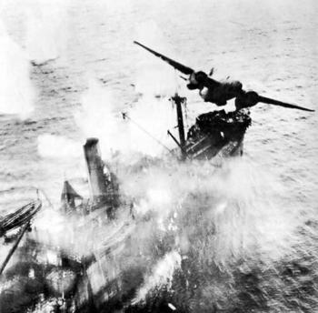
Мемуары о том времени, мы с отцом не обсуждали, да и в сети они появились уже после его ухода из жизни.
Сейчас мне очень жаль, что не смог задать ему многих и многих вопросов.
Но и без этих разговоров становятся понятными истоки бед и бедности послевоенного времени в России.
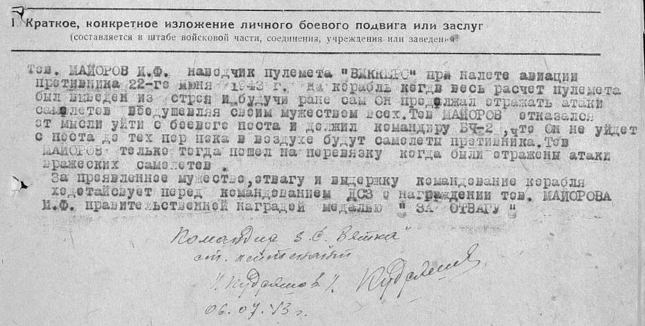
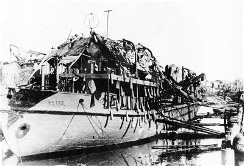
"Вятка" после боя с воздушным противником 22 июня 1943 года у острова Лавенсари
В 1949 году отец, побывав в портах западных странах, демобилизовался с флота и женился на Прасковье Ивановне Гориной по фамилии отчима. До этого они с мамой встречались в его короткие отпуска в городе Курлово.
Отец мамы Пётр Соколов (1904-1942) в голодные годы колхозного строительства 1929-1930 ушёл из Окатово, родной деревни мамы, на заработки в Гусь-Хрустальный и не вернулся в семью. Дед работал на фабрике и умер от туберкулёза, который был распространён среди рабочих фабрики.
Моя бабушка в эти годы не смогла прокормиться без мужа и с годовалой мамой пошла на заработки в посёлок Курлово и там вышла замуж за Ивана Горина, отчаянного гармониста и выпивохи. Вскоре отчим мамы умер, оставив моей маме ещё двух братьев
Анатолия и Юрия Гориных, семьи которых не выжили в сложных условиях коммунистического строительства.
Фото начала 1950-х годов
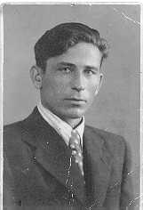
После свадьбы отец повёз маму в Ленинград, где планировал работать вместе с товарищами по службе на флоте, но мама почти сразу заболела и упросила отца вернуться в Курлово. Деньги на свой дом, которые копились отцом, были у него украдены из каюты перед его демобилизацией. В этой ситуации отец согласился с мамой. Они вернулись в родную сторонку и нашли работу в Гусь-Хрустальном. Мама работала бухгалтером, а папа присматривал за пленными на строительстве завода оконного стекла.Через некоторое время отцу предложили службу в милиции в качестве участкового инспектора. Вскоре он
получил на семью комнату в коммунальной квартире с удобствами на улице. Однако крестьянская тяга к своему
дому и хозяйству у него сохранялась на протяжение всей жизни.
В этот нелёгкий послевоенный период налаживания жизни израненного народа отец продолжал проливать кровь.
Однажды пуля прошла рядом с его сердцем.
Несмотря на тяжёлую работу по борьбе с бандами, грабителями и ворами кур, голубей и огурцов с огородов, неустроенный быт, отец учился заочно в институте и чувствовал себя уважаемым среди населения и на службе, физически он был здоров, пользовался успехом у женщин, его уважали мужчины на работе и во дворе, он хорошо играл в шахматы, за призовое место на областных соревнованиях по стрельбе его наградили мелкокалиберной винтовкой.
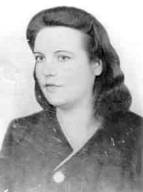
Хрущёвская оттепель вселяла надежды. У отца появился костюм и шляпа. Мама купила гитару. Однако Никита Сергеевич не решился изменить политический курс и свободной экономикой разминировать последствия сталинизма. И в результате ошибок во внутренней и внешней политике и в СССР, и теперешней России воруют уже эшелонами и миллиардами рублей из бюджета всей страны, а по сути у безропотного населения. Последствия сталинских репрессий быстро не прошли. Вместо уличных банд сегодня формируются криминальные группировки, способные к борьбе за власть как в регионах, так и на федеральном уровне.Но в то время я часто ходил с отцом на футбол, где могла играть местная милиция из Динамо с местной фабрикой, а после футбола мужики того времени ещё час другой пили пиво в кружке на берегу озера: коллективно делились своими соображениями по поводу, что же происходит в их стране после победы над Германией. Мне тогда всегда полагалась шоколадка. Своим видом и вкусом она усиливала моё счастье ребёнка.
Это были непростые годы начала холодной войны - войны бессмысленной во всех отношениях и, по моему мнению, с обеих сторон. Накопленное в ходе этой войны ракетно-ядерное оружие стало самой большой угрозой для всего человечества, которую необходимо преодолеть в XXI веке. Однако существующие тенденции развития на всех континентах далеки даже от первых разумных шагов для действенного запрета ядерного оружия.
С офицером милиции Куклиным Павлом Александровичем сохранил дружеские отношения на всю оставшуюся жизнь.
Для меня отец и мама были самыми лучшими на свете. О нашей семье постоянно молилась моя вторая бабушка Матрёна, которая жила с нами в одной комнате. Часто я видел её на коленях в своём уголке.
Зимой 1957 году с нашей семьёй произошло несчастье. В воскресенье отец провожал старшего брата. В привокзальной рюмочной выпили на посошок и расстались. (Подобные рюмочные по всей стране открыли по указанию свыше, для нейтрализации явного недовольства обстановкой в стране и общими результатами победы.)
По дороге домой на отца напали. Уголовники, конкуренты или совместная братва - мне неизвестно. Он пролежал на морозе некоторое время без сознания, но собрался и смог дойти до дома. Отец лечился до лета и я в семь лет носил ему передачи в больницу и горько плакал, глядя на своего кумира на больничной койке.
Наши злоключения не прекратились. Начальство во главе с председателем исполкома городского Совета Семёном Ковалёвым всю войну болевшего в эвакуации строго взыскало с отца за потерю бдительности и небольшой алкоголь в крови.
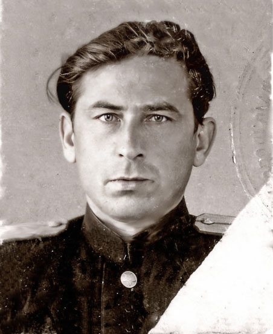
Так мой отец - участковый офицер попал между двумя тисками: начальством - авангардом КПСС и криминалом - авангардом нищего населения. Те и другие умеют быть бдительными в своих интересах за счёт населения, которому даже выборы сделали из одного кандидата выдвинутого мифическим блоком коммунистов и беспартийных.Победитель в великой войне не мог позволить себе идти один по вечернему городу. Хозяином страны сверху был секретарь, а снизу - бандит. Все стали либо участниками, либо соучастниками авантюр и преступлений большевиков. Да и песни были какие-то бандитские:
Будет людям счастье,
Счастье на века;
У Советской Власти
Сила велика!
Кроме этой глобальной беды России, отношения отца, защитника Ленинграда, и его начальника Ковалёва, родом из Ленинграда были не гладкими.
Ковалёв начал войну на больничном, закончил - в эвакуации, вернулся из Омска в уютный Гусь-Хрустальный возле Москвы, устроился на фабрике, вовремя вступил в правящую партию и выдвинулся на пост главы города.
Надо сказать, что и морально-психологическое состояние офицеров милиции, часть которых были участниками войны было смутным. Часто в отделах милиции оседали палачи сталинских репрессий. В Гусь-Хрустальном районе было репрессировано около 1000 врагов народа и около 100 японских и английских шпионов расстреляно. Во Владимирской области было репрессировано около 12 000 человек и около 2000 расстреляно. Похоже, что сталинский режим решил обезопасить себя перед возможной войной. Большевики в 1937-38 годах расстреляли и запытали до смерти в СССР 700 тысяч человек.
У меня мало надежд, что в послевоенной милиции, вместе с отцом не работали палачи нашего народа. Не сохранилось ни одной коллективной фотографии из его милицейской биографии, а бурные ссоры с мамой из-за службы отца в милиции я помню до сих пор. Судя по истории милиции, выложенной на их сайте, там и сейчас не всё гладко. Уши советской власти торчат из каждого абзаца. Большевики предали население России и это преступление до сих пор не раскрыто.
После трагедии мировой войны люди не понимали лозунга Пролетарии всех стран соединяйтесь и, вероятно, часто выпивали после своей работы по удержанию населения от воровства и разбоя. Это было жуткое место работы для фронтовика.
Вскоре отцу пришлось бросить институт, затем старшие товарищи по партии отодвинули его в очереди на квартиру, и он в 42 года, с учётом фронтовой выслуги, в 1961 году вышел на пенсию. При этом нашей семье из 6 человек начальство "улучшило" жильё до отдельной 2-х комнатной квартиры с удобствами на улице.
Бывшему фронтовику и участковому милиции в звании старшего лейтенанта назначили пенсию в 50 рублей, от которой он вынужден был отказаться. В те годы не платили пенсию работающим пенсионерам, а кормить семью на 50 рублей было невозможно.
Мы кое-как выжили в сырой новостройке без удобств. Выживали и не имели перспектив тогда все, даже самые умные и расторопные. У моих знакомых родители имели квартиры со всеми удобствами, были профессорами и героями России, но их семьи не обошли проблемы выживания. Иногда эти проблемы были и не в материальном достатке. Смысловая система страны держалась на Госплане СССР от вождя, а не Госплане от Бога. Далеко от всестороннего комфорта жили члены Политбюро и их семьи. Наверно, не приносят радости дворцы и миллиарды теперешних хозяев России. И, наверно, они и сами не знают как выйти из этой трагической колеи России? А тех, кто может, видимо, российская ментальность отсекает на далёких подступах к власти? Выход искать молодым...
Тогда всё население работало на грандиозные военно-политические планы большевиков, которые с треском рухнули в наше время.
Не на много лучше жили и его товарищи фронтовики по автобазе: Владимир Коробов в годы войны подвозил снаряды танкам на поле боя, Александр Кабицын сопровождал конвои в северных морях. С их детьми я учился в местном техникуме, поддерживаю хорошие отношения и сегодня.
В послевоенное время отец выпивая с мужиками после работы всё пытался что-то сказать о войне, о Ленинграде, пытался залить горечь войны горькой водкой и, иногда, со слезами на глазах, в которых через чувства вырывалась вся невысказанная и часто непонятная несправедливость окружающей жизни.
В 1967 году отец зарабатывал 110 рублей в автохозяйстве, мама 90 рублей, работая главным бухгалтером городской больницы, бабушка 30 рублей пенсию, и я 20 рублей стипендию техникума. Две сестры были школьницами. На мой вопрос в эти годы о его проблемах с криминалом и администрацией он ответил, что с одними сам разобрался, а других советовал оставить суду истории. Так я поступил тогда. И сейчас моя борьба с проблемами отдельных лиц и всего русского населения ведётся только через его просвещение, создание ценностной системы ориентации и объективной ситуации для реализации тех или иных ценностей.
Сегодня народы накопили сил и денег столько, что отдельные люди могут и купить, и уничтожить кого и чего угодно. При этом элементарных знаний и возможностей для реализации своего потенциала у 85% нашего населения нет. При этом люди в стране и сами гибнут, и население других стран обрекают на гибель. А ради чего? Похоже население не доросло для подобных вопросов и даже подсказки не усваиваются травмированным общественным сознанием.
Однако только в 80-е годы после 10 лет боёв за Отечество и почти 40 лет кровопролитного труда под руководством партии Ленина---Брежнева, которая надеялась силой или по инерции, через мировую революцию перейти к коммунизму, отцу вручили ордер на 3-х комнатную квартиру со всеми удобствами, но с проблемой постоянного затопления отходами подвала и грязным подъездом, за которые отвечал всё тот же вездесущий аппарат тоталитарной машины.
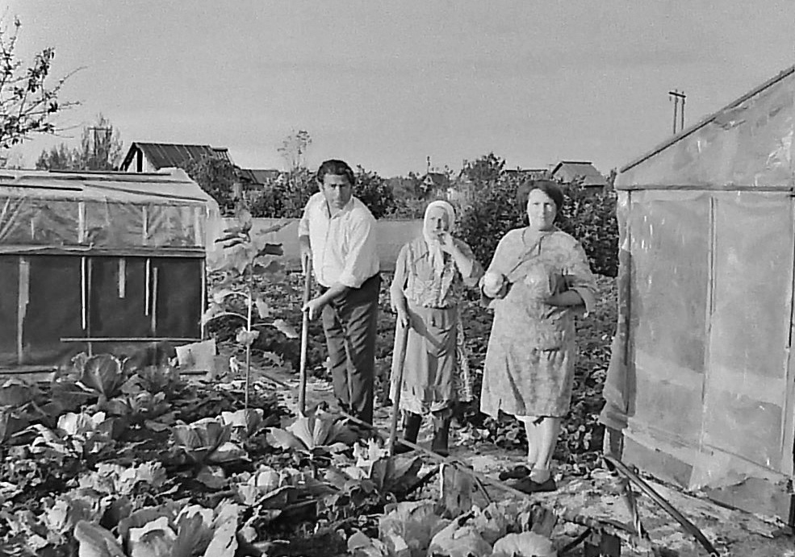
1980 год, мои родители с бабушкой на 6 сотках арендованной у государства земли обеспечивают себя капустой.
Мясо тогда было дефицитом, а за колбасой ездили иногда в Москву.
Участники той воны не стали ни богаче, ни счастливее оттого, что возник так называемый социалистический лагерь и «братские страны народной демократии».
За счет ограбленной и разоренной русской деревни, за счет нищеты советских городов с их бараками и загаженными промзонами в значительной мере создавался послевоенный экономический подъём "соцлагеря"..., однако социальные эксперименты подходили к концу, к развалу СССР.

Семья, 1985 год, 9 мая
Последний раз отца обидели, когда к 40-летию Победы наградили его орденом Отечественной войны второй степени для воевавших в тылу. И только через полтора года в 1986 году, отец получил символ самоотверженного служения родине - орден первой степени, который полагался участникам, воевавшим на передовой.
После окончания военной академии, я часто анализировал результаты Победы и успехи побеждённых в этой войне стран. После чего пришёл к выводу, что мой отец, как и многие миллионы разорённых крестьян были всего лишь участниками войны, но не победителями. Их победу в коалиции с развитыми демократиями, с развитыми гражданским обществами украл режим. Победил Сталин, да и то только на период его жизни.
Отец со мной не анализировал свою жизнь. Похоже, все свои обиды и раны он интуитивно залечивал на арендованных у неразвитого социалистического государства 6 сотках, выращивая на основе последних жизненных сил, ягоды, овощи и фрукты в коллективном товариществе садоводов-огородников. Да и там его садовую избушку на курьих ножках опустошили ранней весной 1998 года. Начинающие предприниматели нашего постперестроечного отечества разломали все двери, украли (вывезли машиной) из садового домика инструмент и 30 кг. баллон с газом. Этого разбоя он уже не перенёс. Всю весну отец восстанавливал свой садовый домик, а 28 июня скоропостижно ушёл из жизни.
{kind=link}
Мои сёстры ухаживают за его двумя квадратными метрами в Гусь-Хрустальном. Там ещё не вошли в моду надгробные ограды и к его могиле ещё можно пройти.
Ничего родного не осталось в деревне, где родился мой отец, да и дом в Курлове, в котором родился я, ушёл с молотка в начале 2019 года. Нет сил моим родственникам содержать родительский дом и 13 соток на Социалистической улице.
Мало того, сегодня, через сто лет после рождения отца, в конце августа 2019 года на улице Колхозной в деревне Уляхино продолжают гореть русские мужики, для многих из которых бутылка водки и пачка сигарет представляют не малую ценность. Наследие большевиков- пережитки колхозного строя в отношениях между людьми ещё не начали изживать на российских просторах. Само вряд ли рассосётся. Но не смотря ни на что другие мужики продолжают работать и на этой же улице расположена контора АПФ "РОССИЯ" одного из самых мощных и стабильных сельскохозяйственных предприятий не только Гусь-Хрустального района, но и Владимирской области.
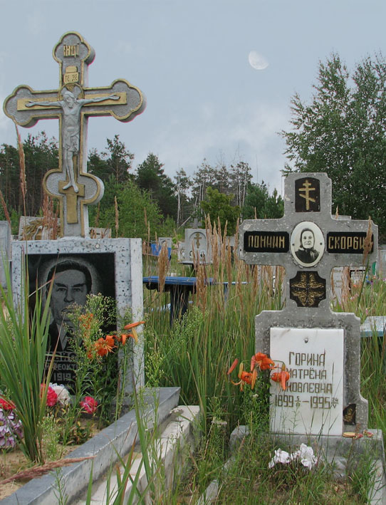
Мне представляется, что и после ухода из жизни поколения, реально воевавшего за свой дом, за освобождение городов России и других стран, продолжает обворовываться.
Россия продолжает терять свой потенциал. И это воровство не только связано с конкретными людьми - такова природа общества и власти в России, которые нарастив огромные пространства и ресурсы не в состоянии эффективно их использовать. И сегодня, наблюдая реакцию людей на решения властей, можно сказать, что население остаётся простым участником странной политики, побед, поражений и чьих-то завоеваний.
Мои наблюдения во время поездок по маршруту Москва-Петушки и далее в глубь Владимирской области во время учёбы в Москве легли в анализ бандитской власти, которую наименовали советской, и в объективность которой, в её всемирно-историческую роль в период позднего Брежнева, вероятно, поверили и сами престарелые руководители страны. Позже этот период был назван застоем. Так оно и было на самом деле.
Но и теперь нашему небогатому населению вместо акций от природных богатств раздают георгиевские ленточки вместо хоть какой-то доли огромных богатств, которые могли бы ещё в ХХ веке послужить основой для становления народа, нации. И это всё признаки того, что в обществе не изжиты криминально-силовые методы Ленина-Сталина, замедлившие на столетие развитие нашего населения. Бусы, флаги или ленточки не поднимут население с колен в век постмодерна: для создания инновационных технологий людям необходимы реальные, необходимые ценности с достаточным наполнением! Большинство из семьи моего деда вслед за ним сгинули в экспериментах большевиков. Больших семей в России не осталось. Более того, можно констатировать, что ценность семьи в России нуждается в срочном восстановлении и приоритетной поддержке. Да и другие ценности человека: богатство (деньги), гуманитарное образование, нравственность... требуют особого внимания правительства.
В 2017 году на средства от своей пенсии создал и поддерживаю Галерею картин и рисунков для дома и школы - проект для разумного воспитания современного человека на основе необходимых ценностей для современного развития.
После 30 лет революций и войн на Украине, нынешние выборы Президента и в Раду меня ещё раз убедили, что в
России, что в Украине, что в любой другой постсоветской стороне - у 85% населения и правящего режима
большие формальные права и низкая гражданская зрелость. Население может с сознанием дела вести борьбу
только на своих 6 сотках за огурцы, а режим за свои мутные доходы. Любая другая активность ещё не
прижилась.
Да и общий уровень дикости населения и бестолковости аппаратов власти в наш цивилизованный век примерно
85%. В России 15% и 85% подходят и для села, и для академии наук.
В Париже, может быть 25% и 75%, но там нам делать нечего. Высоцкий в 1975 году это сказал своими
словами:
"...Ваня, Ваня, Ваня,
мы с тобой в Париже
Нужны — как в бане
пассатижи."
При этом от нефте-газовых доходов населению кое-что достаётся, а для большего оно и не созрело. Поэтому
адекватному населению России надо заниматься просвещением народа и налаживать современную систему
отношений в России, а молодёжи, необходимо реализовать чувство собственного достоинства. Для этого
полезно вести непрерывный диалог с властью в любом виде и форме об устойчивом развитии общества, в
котором им жить. При этом замечено, что счастливая жизнь получается у тех, кто проявляет инициативу и в
общественной, и в личной жизни.
Молодёжь участвует со всех сторон. Да и других методов обновления в современную эпоху нет. А для
осмысленности процесса социального диалога и консолидации конструктивных сил надо определиться с темами,
оценками результатов и методиками дискуссий. Всё это надо открыто публиковать на сайтах гражданских
сообществ.
Серые личности во власти надоели. Не жить же и дальше с памятниками Ленину и олигархами в его тени.
Путинская демократия представляется мне большим ипподромом, где народ развлекается, делая ставки на
лидеров, заранее оговоренных где-то в верхах.
Позволять российским политикам вновь окормлять окраины или вкладываться за рубежом себе в убыток, да и не
перспективно.
Полагаю, что мой проект из трёх партий на основе достоинства человека, или аналогичный, в русле гармонии
силы, денег и знания, в ближайшем будущем сыграет свою роль. Кто и как его запустит мне не ведомо. Может
быть это будут потомки основателей нынешнего режима. А до этого будут побеждать на выборах, то яблоки, то
дули, а то и зубровка.
P.S.
Заблуждения политиков, большевиков призывающих пролетариат к всемирному свободному труду на общей собственности и сраведливому распределению результатов привели к обману дольщиков Великой Победы, в которую они вложили все свои жизненные силы. Это поколение, которым полностью распоряжался тоталитарный режим; это поколение, у которого украли результаты Победы в войне, сделав соучастниками режима, продолжающего тупиковую политику на средства населения.
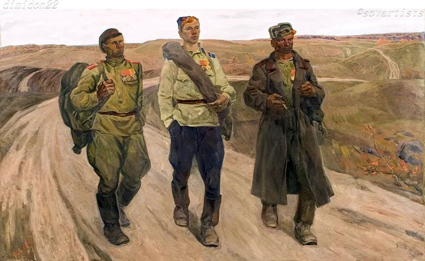
Отечество поделилось с ними крохами, иногда одной лишь медалью За победу над Германией.Или как в популярной песне за город Будапешт:
Враги сожгли родную хату
Михаил Исаковский
Враги сожгли родную хату,
Сгубили всю его семью.
Куда ж теперь идти солдату,
Кому нести печаль свою?
Пошел солдат в глубоком горе
На перекресток двух дорог,
Нашел солдат в широком поле
Травой заросший бугорок.
Стоит солдат - и словно комья
Застряли в горле у него.
Сказал солдат: "Встречай, Прасковья,
Героя - мужа своего.
Готовь для гостя угощенье,
Накрой в избе широкий стол,-
Свой день, свой праздник возвращенья
К тебе я праздновать пришел..."
Никто солдату не ответил,
Никто его не повстречал,
И только теплый летний ветер
Траву могильную качал.
Вздохнул солдат, ремень поправил,
Раскрыл мешок походный свой,
Бутылку горькую поставил
На серый камень гробовой.
"Не осуждай меня, Прасковья,
Что я пришел к тебе такой:
Хотел я выпить за здоровье,
А должен пить за упокой.
Сойдутся вновь друзья, подружки,
Но не сойтись вовеки нам..."
И пил солдат из медной кружки
Вино с печалью пополам.
Он пил - солдат, слуга народа,
И с болью в сердце говорил:
"Я шел к тебе четыре года,
Я три державы покорил..."
Хмелел солдат, слеза катилась,
Слеза несбывшихся надежд,
И на груди его светилась
Медаль за город Будапешт.
1945 год
Картина неизвестного мне автора.
Население вновь за его же деньги повели в сторону подготовки нового этапа мировой гражданской войны за мировую систему коммунизма-социализма под руководством власти большевиков.
Обескровленные и обессиленные, они не возражали против воровства результатов кровью завоёванной Победы: они остались живы после потерь родственников в гражданскую войну в России и во время последующих репрессий. Почти все семьи были загнаны мобилизационной политикой государства, ослаблены материально, дезориентированы нравственно, не чуть не повысив свою субъективность гражданина в семье свободных от кого-то республик.
В ХХ веке были окончательно подорваны жизненные силы народа, а в следствие травмированного и искажённого большевиками сознания нашему населению и к началу XXI века не удаётся стать гражданским обществом, политической нацией: 85% населения не усвоили провозглашённое Конституцией достоинство человека, с трудом называют ещё какие-либо ценности кроме денег и здоровья и могут воспринимать информацию только в форме шоу на телевидении, где для населения специальным образом приготавливается их общее мнение.
Собственное мышление населения не сформировалось, а чиновникам и новому дворянству из бывших холопов выгодны "мёртвые души" - они ни о чём не спрашивают, ничего не требуют. Да и тело нашему населению не удаётся привести в адекватное сегодняшнему дню состояние благополучия. Бедность значительной части населения выходит за рамки мирного времени этого 2019 года.
Не выделяется необходимых средств на благосостояние населения и сегодня. При этом даже представители населения в существующей вертикали власти не способны контролировать народный бюджет на всех уровнях.
Кому служат госслужащие? Кому служил отец, кому служил я? Это вопрос остаётся открытым, пока в России не появится традиция свободы народа, свободных выборов, справедливого суда, свободных средств массовой информации и гласности в распределении бюджетных средств.
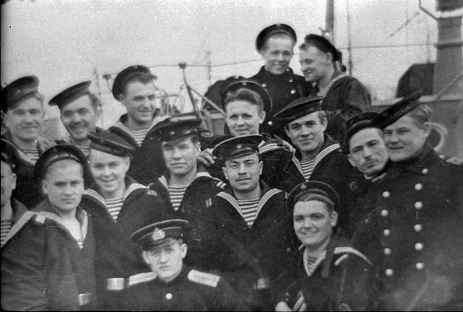
Фото с командиром "Вятки"
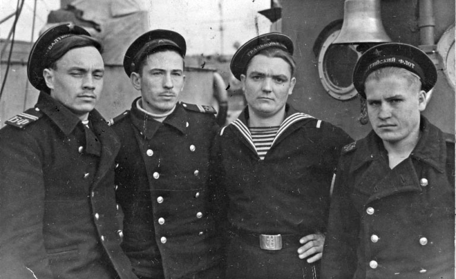
Фото из архива отца: предположительно весна 1946 года, второй слева Майоров И.Ф.
Очистка Балтики от мин продолжалась до 1953 года.
Это поколение, чьи лучшие сыны и дочери получили "из камня гимнастёрки, из камня сапоги" и которому запрещалось анализировать истоки, результаты войны и причины начавшегося сразу после войны противостояния странам Западной демократии, а саму дату окончания этой великой трагедии превратили в фейерверк, на карнавале которого в наше время стали появляться ряженые или люди специально исполняющие роль благодарных власти ветеранов.
Вялотекущая перестройка России новым поколением 1985 года в условиях слабого государственного аппарата и отсутствия общественного мнения отвоёванного отечества привела не к осознанным народом реформам, а к высвобождению агрессии загнанного человека, что обусловило разрушение хрупкого устойчивого состояния общества.
Теперь населению и каждому человеку надо прежде всего всеми средствами исправить своё сознание и сосредоточится на своих ценностях, на неотъемлемом достоинстве человека, структуре своих прав и конституционных свобод и с сознанием своей национальной воли осуществлять последующие победы и строительство своей национальной культуры.
Если бы этому поколению хотя бы не сковывали инициативу, то коттеджами и современными предприятиями они обустроили бы Россию к 1961г., а космонавтов и спутники запускали к 1981г. по необходимости, а не для СЛАВЫ КПСС. И самое главное, было бы сокращено количество дикости и злобы в межличностных отношениях.
После похорон отца я вернулся в Москву, и команда Ельцина объявила, что жизнь придётся начинать с чистого листа - дефолт. Очередное поколение вновь было ограблено ГОСУДАРСТВЕННОЙ МАШИНОЙ отечества, за которое воевал мой отец.
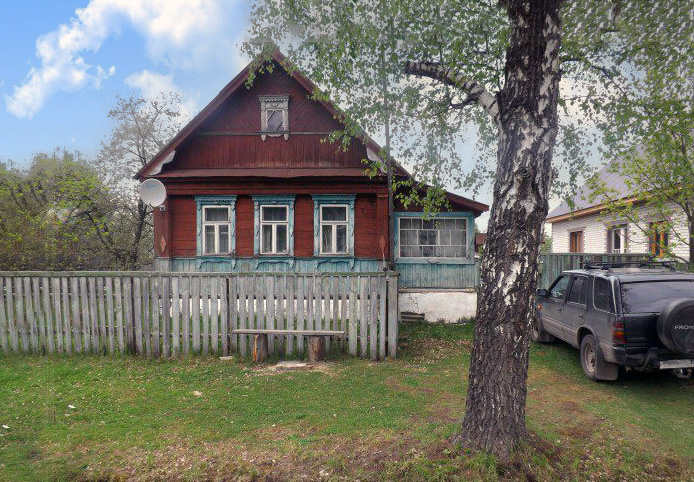
Столетие отца ознаменовалось продажей весной 2019 года дома в городе Курлово, в который переехала в 1938 году моя бабушка Наталья Майорова из деревни Уляхино. Дом в котором я родился. Однако детство и юность прошли в Гусь-Хрустальном.
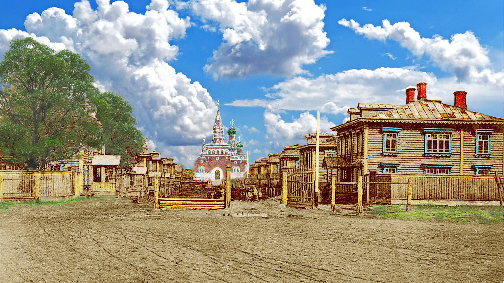
Улица от вокзала. Город Гусь-Хрустальный, ~ `1913 год. Раскраска автора, весна 2020 года
Через 10 лет в 1923 году по приказу большевиков местные активисты снесли купола со всех освящённых зданий. Вывесили красные флаги, назвали оставшееся после разгрома сооружение храма дворцом труда, а на праздник открытия пригласили Калинина. Вскоре в честь всероссийского старосты переименовали Софийскую улицу. Сами местные комиссары расположились в бывшей богадельне при храме и указали адрес - дом №1, а дворцу труда присвоили адрес дом №2 по улице Калинина.
2020 год. Георгиевский собор в Гусь-Хрустальном не восстановлен, а кое-какие оставшиеся дома догнивают возле заасфальтированной в 60-х годах дороги.
Интересно, как выглядела бы эта дорога к храму, если бы она состоялась, а ХХ век не был веком войн и революций?
В город своего детства Гусь-Хрустальный езжу мало, а на его прекрасной набережной большевика Семёна Ковалёва мне неуютно.Тяжело ходить и по улицам с именами других большевиков, революционеров-террористов. Эти символы были навязаны преступной и заблудшей властью моему родному городу вместо существовавших исконно русских названий. Коммунизм, как вера в лучшее, умер, а его призрак продолжает бродить по селениям моей несчастной родины.
Люди! Будьте бдительны, не создавайте себе кумиров, диктаторов, авангардов и партий власти: ХХ век - век тоталитарных заблуждений, трагический урок народам. Дорожите неотъемлемым достоинством, своими ценностями, конституированными правами и свободами для обустройства счастливой и устойчивой совместной жизни.
Для чего я это пишу, отмечая 100-летия своего отца? Пишу для того, чтобы помнить о варварстве собственного народа или его части и не забывать подвиги предков, развивая культуру общежития, не допуская возврата к ужасам ХХ века. Тем более в наше время проблемы экологии и всеобщей ракетно-ядерной войны могут затмить заблуждения ХХ века.
Эти сто лет включили в себя и русскую революцию и грандиозный социалистический эксперимент, вобрали в себя две горячие и одну холодную мировые войны, Великую депрессию мировой экономики, фашистский режим в Европе, распад колониальных империй, а затем беспрецедентное хозяйственное развитие и небывалый рост экономики во второй половине ХХ в., резкий подъем научно-технического прогресса, прорыв человечества в ближний космос, возвеличивание США и СССР, международное объединение Европы от «общего рынка» до Европейского союза, мировой экономический кризис 1970-х, подъем Китая и Азии, нарастание и последующий триумф глобализма во главе с США, распад СССР и постсоветский кризис России. Переход от модерна, впавшего в конце прошлого столетия в долговременный кризис, к застойному постмодерну в России и растерянности элит развитых стран.
Надеюсь, к моему столетию со дня рождения к 2050 году, народ России будущего обретёт свою горизонталь, а
День защитника Отечества станут отмечать как и наши деды на Святого Георгия Победоносца 6 мая. Этот
День отмечался абсолютно во всех подразделениях армии и флота, также он отмечался и гражданским
населением. Проводились в этот день молебны, присяга новобранцев, торжественные обеды и собрания,
Георгиевские балы и другие мероприятия, восславлявшие силу и мощь русской армии.
Защита Отечества нужна, но я не приемлю преемственность этого праздника с событием банды, разрушивших
Россию. Конечно, 85% населения празднует те даты, которые есть и внук мой провёл утренник Защитника
Отечества в мутную дату, но я туда не ходил.
Второй внук окончил первый класс в московской школе, освоил мат и во взаимоотношениях со мной и бабушкой стал применять фразу "да, пошёл ты", при этом не усвоив должным образом правило прописи имён собственных с большой буквы и лёгкого сложения чисел в пределах 20.
Не хотят возвращаться потомки князей Мальцовых, Голицыных, Долгоруких... из Парижа, а отдельным энтузиастам исправить положение в России чрезвычайно трудно. Да ещё в условиях, когда лица из бывшей номенклатуры или от отличников боевой и политической подготовки от населения, усвоившие языки и высшее образование, получившие финансовую поддержку от родственников, успешно приватизировавших общую собственность, стремятся на Запад.
Для меня 2017-2019 годы были напряжёнными. Много читал и анализировал в связи со столетием революции в России, столетием моего отца и странными выборами президентов в России, США и Европы.
На мой взгляд, катастрофа 1917 года в России спровоцировало мировое восстание подданных и подневольных
лиц, которое в основном и завершилось в России в 1991 году.
Цивилизация, её элиты в эволюционно развивающихся странах не стали бы от имени народа уничтожать
миллионы. Это могли делать только рабы и по указаниям рабов. Тем более, что народ не появляется на
следующий день после восстания рабов или подданных.
Восстание Спартака в Риме 2000 лет тому назад и революция Ленина похожи, да и подвиги Иисуса и Мухаммеда
не много изменили в сущности человека с тех знаменательных дней.
Рабство после Спартака просуществовало 2000 лет и кое-где встречается и в наши дни. Социализм может быть осуществим через 1000 лет, но не на выводах марксизма-ленинизма и не руками рабочих, крестьян и солдатских депутатов. Поэтому память о Ленине должна быть только исторической, как о Спартаке в Риме.
В начале 21 века очаги социальных трагедий и язв не покинули наш мир. Современные социальные группы господ, как и 2000 лет тому назад, формируются по трём основным каналам: сила, деньги и знания. Меня беспокоит, что в России ускоренно формируются мнимые группы господ на основе только денег, силы или только знаний. В результате мы продлим существование бедной несвободной страны, но с более опасными сообществами богатых, сильных или только образованных подневольных людей, готовых на всё: и на изобретения, и на применения, и на протесты.
Надеюсь, что в конце третьего тысячелетия свободные народы развитых стран смогут обустроить Землю на основе равенства в своём достоинстве без очевидной несправедливости и социальных потрясений с устойчивым развитием глобального человечества.
Хотелось бы только одного, чтобы процесс реального освобождения масс начался в этом столетии.
Заканчивается год 100-летия со дня рождения моего отца.
В память об отце, научившим играть меня в шахматы, размещаю фото своего рейтинг от 12.11.2019 на международной площадке блиц в интернете.
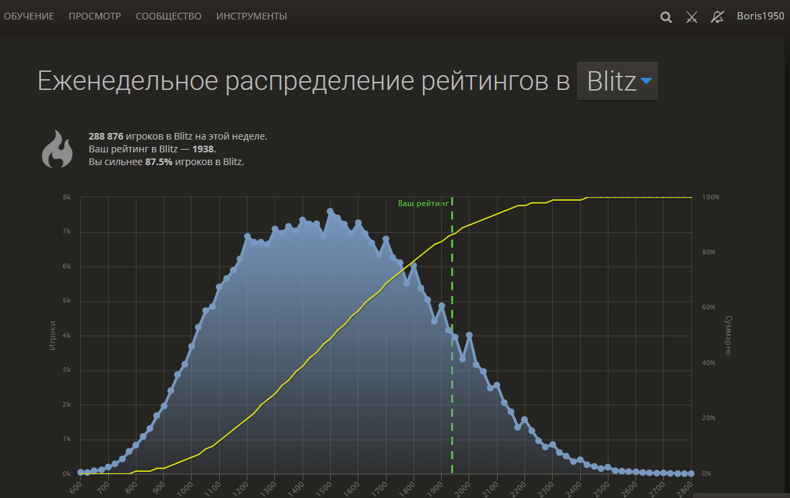
2019 год
Приложение:
- сын Никиты Хрущёва Сергей об отце https://www.youtube.com/watch?v=yTTIR8x4-bw
- Игорь Чубайс https://echo.msk.ru/blog/i_chub/2581530-echo/ Конец 19 века стал в Европе периодом цивилизационного кризиса. Христианский Бог перестал восприниматься как начало всего сущего, как мера всех вещей и отношений, как утверждение высших моральных, правовых и эстетических ценности. Вера уступила атеизму. Но общество, как и прежде, нуждалось в высших авторитетах, в идеалах и ориентирах. И в мир пришли «человеко-боги» - самозванные вожди, фюреры, дуче, каудильо и т.д. Европейские народы приняли их за лидеров, но вождизм привел к тяжелым потерям и быстро себя исчерпал. Тогда европейцы решили – от Бога мы ушли, вождям не доверяем, остается верить в самих себя. Так возник культ свободы. Но в России мы до сих пор не смогла избавиться от давно исчерпавшего себя вождизма… Только пройдя путь, которым прошли наши европейские соседи, подвергнув критике ленино-сталинщину, мы сможем возродить себя, свою историю и свою страну!
- Андрей Зубов: Избранное · 31 декабря 2016 год
Не хотел писать ничего к Новому Году, а тут один из моих друзей искренне спросил меня: "Андрей Борисович, а при царе в 2017 России было бы лучше?" Я ответил ему, а потом подумал, ведь год-то грядущий - год столетия нашей катастрофы. Так что мой ответ Ильясу как раз подстать печальному юбилею:
"Настолько лучше, что даже думать об этом не хочется. Мы были бы скорее всего конституционной монархией, как Япония или Великобритания, не распались бы на части, промышленность была бы развита, сельское хозяйство не исчезло. Поля бы не заросли, но вся земля перешла крестьянам и фермерам - уже в 1917 г. в их руках было 4/5 сельскохозяйственных угодий.
Законы 1906 г. стали бы основой для дальнейшего конституционного развития, в том числе и в сфере прав человека. Скорее всего Россия бы стала многонациональной и многоисповедной федерацией, похожей несколько больше на Индию, чем на США. Из империи мы превратились бы в содружество наций, в котором люди живут вместе не потому, что их принуждают к этому, а потому что они желают этого - как в нынешнем Евросоюзе или США. Я не знаю, где пролегли бы границы России, но точно, что Польша и Финляндия стали бы независимыми странами - они фактически обрели независимость уже в ходе Первой мировой войны. Быть может какие-то особые отношения соединяли бы их с Россией, а может быть и нет.
Огромное число умнейших и талантливых людей не покинуло бы Россию, а наоборот, как в США и Канаду к нам ехали бы со всего мира. Ведь ехали же до 1917 года. Одних чехов приехало 200 тысяч, а немцев - 4,5 млн.! Не было бы Второй мировой войны, Голодомор даже в страшном сне не привиделся бы и террор и Красный, и Большой. Думаю и спутник бы запустили бы лет на 10 раньше и в космос вышли, возможно в объединенном проекте с США и Западной Европой. И жило бы сейчас на пространствах исторической России так миллионов на сто-сто двадцать больше людей, чем живет сейчас. Эх, да что говорить!
С Новым Годом, через столетие после 1917, дорогие друзья! Если мы живы, еще не всё потеряно. Будем из этого подземелья выводить Россию!